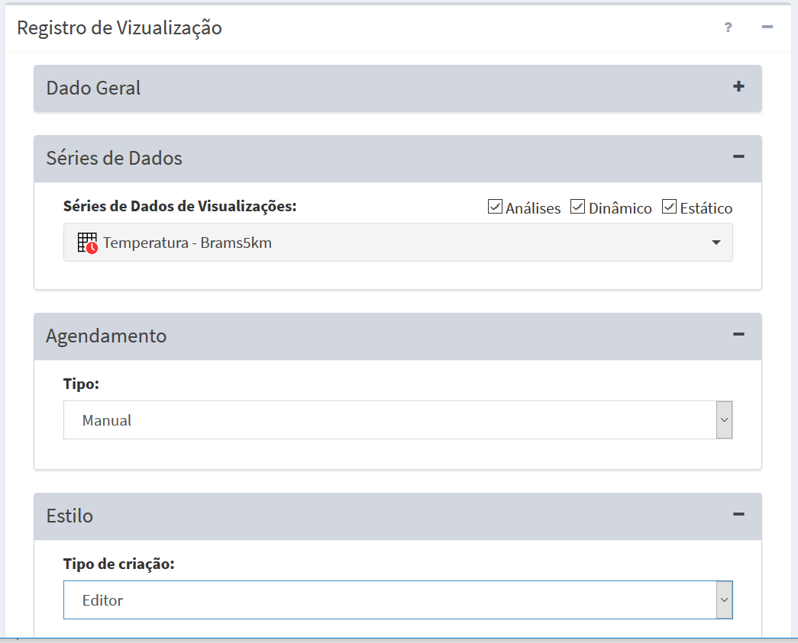
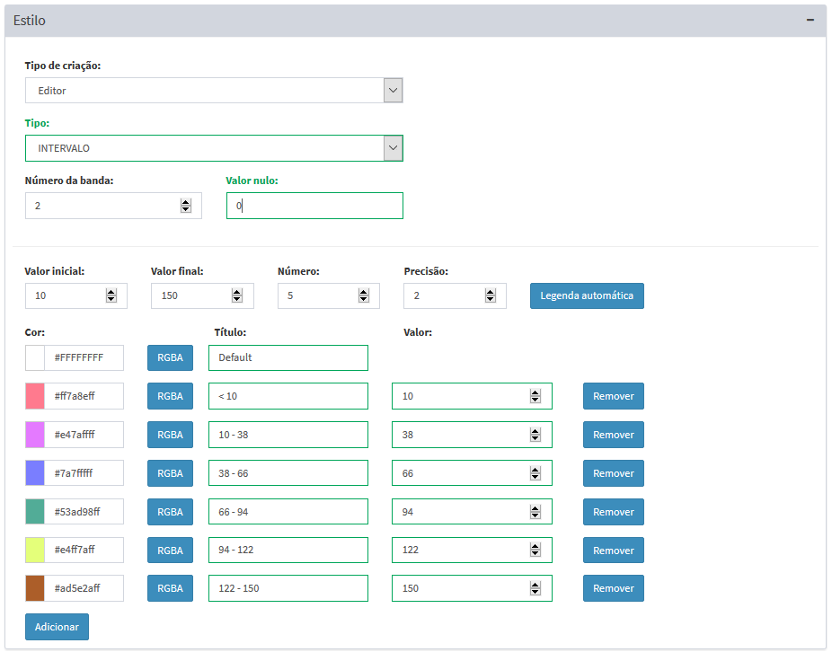

Adicionar Visualização
Para adicionar uma nova visualização é necessário ter um projeto ativo. No menu de opções selecione “ Visualizações” para que a lista de visualizações disponíveis seja apresentada na área de trabalho. Clique no botão “ + ” para adicionar uma nova visualização. Utilize o botão “Salvar” para salvar a visualização. Utilize o botão “Salvar e executar” para salvar a visualização e executar a publicação imediatamente, independente de algum agendamento. Não é permitido nomes de visualizações em duplicidade. Botão “Cancelar” volta à tela anterior sem salvar a visualização. A Figura 4.3 mostra a área de trabalho para adicionar nova visualização. Detalhes de cada campo a seguir.

Figura 4.3 – Módulo de Administração: Registro de visualização.
Registro de Visualização – Informações Gerais:
- Nome: Defina o nome da visualização. O tamanho máximo do nome é de 100 caracteres. Sugerimos nomes curtos pois estes serão utilizados como nome das camadas no módulo de monitoramento.
- Serviço: Escolha o serviço de visualização a ser utilizado.
- Privado: Marque esta opção para visualizações que exigirão acesso restrito a usuários no módulo de monitoramento, portanto, login e senha serão solicitados. Se opção desabilitada a camada estará disponível no projeto correspondente independente de realizar login ou não.
- Descrição: Campo não obrigatório para descrição da visualização. O conteúdo deste campo estará disponível como caixa de texto explicativa da camada disponível do módulo de monitoramento.
- Ativo: Botão ativo significa que qualquer dado dinâmico ou análises que estão agendadas para serem publicadas serão atualizadas no módulo de monitoramento de forma automática ou nos horários pré-definidos. Se opção desabilitada a publicação dos dados será de forma manual, isto é, deverá clicar no botão
 Executar na lista de visualizações disponíveis (ver abaixo Executando uma Visualização).
Executar na lista de visualizações disponíveis (ver abaixo Executando uma Visualização).
Registro de Visualização - Série de Dados:
- Séries de Dados de Visualizações: Escolha o dado que deseja publicar na aplicação web de monitoramento. Todos os dados estáticos (vetoriais ou matriciais), dinâmicos (PCD, ocorrências ou matriciais), resultados de análise (por objeto monitorado, grades ou PCD) ou ainda resultado de interpolações de PCD´s estarão disponíveis. Um dado pode ser utilizado em diferentes configurações de visualizações.
- [V] Análises, [V] Dinâmico ou [V] Estático: Utilize estes botões para filtrar a lista de dados disponíveis.
Registro de Visualização - Agendamento: (se dado dinâmico ou análise)
- Tipo: Escolha tipo “Manual”, “Agendamento” ou “Automático”. Se “Manual” a visualização só será realizada se o usuário utilizar o botão
 Executar na lista de visualizações do item desejado ou salvar com opção de executar. Se “Agendamento” preencha os campos abaixo. Se “Automático” a visualização será atualizada sempre que uma de coleta de um novo dado dinâmico ou análise ter sido realizada.
Executar na lista de visualizações do item desejado ou salvar com opção de executar. Se “Agendamento” preencha os campos abaixo. Se “Automático” a visualização será atualizada sempre que uma de coleta de um novo dado dinâmico ou análise ter sido realizada. - Unidade de tempo (somente se Tipo for Agendamento): Escolha um item entre “Segundos, Minutos, Horas e Semanalmente”.
- Frequência (somente se Unidade de tempo for Segundos, Minutos, Horas): Digite um valor de um número inteiro ou fracionado.
- Tempo Inicial
 (somente se Unidade de tempo for Segundos, Minutos, Horas): Clique no campo para escolher o valor de hora, minuto e segundo que será utilizado como referência para executar a visualização.
(somente se Unidade de tempo for Segundos, Minutos, Horas): Clique no campo para escolher o valor de hora, minuto e segundo que será utilizado como referência para executar a visualização. - Agendamento (somente se Unidade de tempo for Semanalmente): escolha uma das opções entre “Domingo, Segunda-feira, Terça-feira, Quarta-feira, Quinta-Feira, Sexta-feira e Sábado”
- Hora
 (somente se Unidade de tempo for Semanalmente): clique no campo para escolher o valor de hora, minuto e segundo que será executada a visualização.
(somente se Unidade de tempo for Semanalmente): clique no campo para escolher o valor de hora, minuto e segundo que será executada a visualização.
Registro de Visualização – Estilo – Mapa:
Utilize os parâmetros dessa aba para definir um estilo de apresentação do mapa. As propriedades disponíveis dependem da série de dados escolhida acima.
- Tipo de criação: Escolha entre as opções disponíveis para cada série de dados:
- Se Análises de Objeto Monitorado, PCD ou Processamento Vetorial: Escolha Editor (neste caso deverá escolher o tido e o atributo da legenda) ou SLD - “Style Layer Descriptor” (poderá criar a legenda em sistema de geoprocessamento que exporte a legenda nesse formato).
- Se dado estático ou dinâmico matricial, ou ainda análises do tipo Grade: Escolha Padrão (para dado estático matricial tipo imagem colorida RGB, imagem monocromática, imagem colorida codificada ou grades numéricas), Editor (neste caso deverá escolher o tipo, número da banda e o valor nulo), SLD - “Style Layer Descriptor” (poderá criar a legenda em sistema de geoprocessamento que exporte a legenda nesse formato), Dias sem chuva, Precipitação, Umidade, Risco de fogo, Temperatura (Kelvin) e Temperatura (Celsius) (modelos pré-definidos para dados dinâmicos matriciais ou resultados de análise de grades), e ainda Vento (requer que o dado dinâmico matricial tenha as duas bandas para serem selecionadas.
- Se dado estático vetorial (ponto, linha ou polígono): Escolha Editor (neste caso deverá escolher o tido e o atributo da legenda) ou SLD - “Style Layer Descriptor” (poderá criar a legenda em sistema de geoprocessamento que exporte a legenda nesse formato), Estados, Biomas, Unidades de Conservação, Municípios e Países (modelos pré-definidos para dados estáticos vetoriais do programa Queimadas do INPE).
- Se dado dinâmico de ocorrência (ponto ou polígono): Escolha Editor (neste caso deverá escolher o tido e o atributo da legenda) ou SLD - “Style Layer Descriptor” (poderá criar a legenda em sistema de geoprocessamento que exporte a legenda nesse formato) e Focos (modelo pré-definido para focos do programa Queimadas do INPE)
- Se série de dados no formato vetorial, estarão disponíveis as opções: Estados, Biomas, Unidades de Conservação, Municípios e Países. Os estilos disponíveis para os dados de formato vetorial são os mesmos utilizados no banco de dados do programa Queimadas do INPE.
- Tipo: Escolha entre as opções Gradiente, Intervalo e Valor. A opção Gradiente estará disponível somente para formato matricial.
- Gradiente (somente se Tipo for Gradiente): Utiliza uma sequência de tons contínuos entre duas cores ou mais, formando uma transição suave entre as cores escolhidas.
- Intervalo: As cores são associadas a diferentes intervalos de valores. É necessário indicar o valor inicial, valor final e a número de intervalos. Na Figura 4.4 é mostrado um exemplo do preenchimento dos dados para o tipo Intervalo.
- Valor: Utilize essa opção para inserir camadas manualmente à legenda.
- Atributo: Selecione um atributo da tabela para gerar a visualização.
- Número da banda (somente se formato matricial): Utilize este parâmetro, se o dado matricial possuir mais de uma banda para indicar qual banda será utilizada na visualização. A primeira banda corresponde ao número 0.
- Valor nulo (somente se formato matricial): Valor numérico que indica um dado inválido na imagem.
- Valor inicial (somente se tipo INTERVALO): Deve ser inserido o valor mínimo do dado que será visualizado.
- Valor final (somente se tipo INTERVALO): Deve ser inserido o valor máximo do dado que será visualizado.
- Número (somente se tipo INTERVALO): Deve ser indicado número de intervalos entre cada classe representada na visualização. Nota: O número de intervalo não é igual ao número de classes.
- Precisão (somente se tipo INTERVALO): Corresponde a quantidade de casas decimais a serem utilizadas.
- Única banda (somente se formato matricial): Marque essa opção se o dado matricial possuir apenas uma banda. Disponível apenas para estilos prontos de formato matricial, com exceção o estilo Tipo de criação Vento.
- Banda norte e Banda leste: (somente para o tipo de criação "Vento"). Essa variável está relacionada a direção dos ventos.
- Cor: Existem três formas para se definir uma determinada cor: 1 - utilizando código de cores. Exemplo: Amarelo = #FFFF00FF; 2 - selecionando uma cor na paleta de cores; e 3 - utilizando o sistema RGBA (Figura 4.5).
- RGBA: É a sigla para Red, Green, Blue (Vermelho, Verde, Azul) e Alpha. A proporção de cada uma dessas 3 cores juntas obtém-se uma determinada cor. O valor de cada componente (R, G e B) deve ser inteiro e variar de 0 a 255. Por exemplo, a cor amarela é representada por R-255 G-255 e B-0. A componente Alpha é o que determina a faixa de transparência da cor, também utilizam-se valores inteiros variando de 0 (completamente transparente) a 255 (completamente sólido).
- Título: Corresponde ao nome da legenda na visualização, podendo ser editado pelo usuário. Nota: O campo “Default” corresponde aos valores que estiverem acima do último nível informado. A cor correspondente a esse campo é branca e sólida, equivalente ao valor 255 em todas as componentes do RGBA: R-255, G-255, B-255, A-255.
- Valor: Corresponde aos valores do atributo, deve ser valor único, que será representado na visualização, é disponível tanto para dados de formato matricial quanto formato tabela com feições.
- Adicionar: Adiciona novo item da legenda.
- Remover: Remove um item da legenda.
- SLD: É uma linguagem de marcação, chamada Styled Layer Descriptor, baseada em XML na qual específica o estilo para pontos, linhas e polígonos, bem como dados matriciais e rótulos de texto.
- Legenda automática: Essa opção estará disponível apenas se o atributo selecionado possuir no máximo 30 valores correspondentes a identificadores únicos.
As Figuras 4.4 e 4.5 mostram detalhes do estilo na edição de uma visualização.

Figura 4.4 - Exemplo de edição de estilo do tipo Intervalo.
Figura 4.5 - Exemplo da escolha da cor do item de legenda.
Registro de Visualização – Estilo – Gráfico:
Utilize os parâmetros dessa aba para definir um estilo de gráficos de uma série de dados selecionada.
- Nome: Digite um nome do gráfico. Conteúdo digitado será utilizado para identificar o gráfico, portanto não é permitido nomes iguais para uma mesma visualização. O nome ficará disponível da lista de gráficos a esquerda.
- Título: Digite um título para o gráfico. Conteúdo será apresentado no módulo de monitoramento.
- Descrição: Digite um título para o gráfico. Conteúdo será apresentado no módulo de monitoramento.
- Tipo: Escolha entre as opções Pie, Donut, Bar, Horizontal Bar, Line e Área.
- Função de Agrupamento: Escolha entre as opções Sum (soma) e Count (contagem). Se opção Sum deverá escolher o atributo do agrupamento.
- Série de agrupamento: atributo para agrupamento dos dados.
- Agrupado por: atributo numérico a ser utilizado com a função de agrupamento de soma.